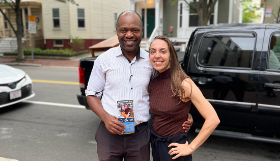

Endorsements

Cambridge Councillor Dennis Carlone
"Cambridge needs dedicated, intelligent Councillors and Adrienne certainly has those skills and then some."
Former City Councillor Nadeem Mazen
"I first met Adrienne back in 2013. I was a city councillor, she worked with English Language Learners. From that time at Enroot until now- in her role with the City of Cambridge- I have seen someone with tireless dedication to the most vulnerable in our city. I know she will be a staunch advocate for residents if elected to city council and support her candidacy wholeheartedly."
Somerville Councillor at-Large Will Mbah
 "Adrienne and I first met when she was a graduate student at Tufts. We've always been able to talk honestly. She was there when I started my family and launched my political career and now I am so excited to be there as she does the same"
Carlos Mesa-Baron
“I first met Adrienne Klein when she helped oversee the College Success Program for the 2014 CRLS graduating class. I fondly remember how Adrienne took a sincere interest in my development and future. At the time my only college option was Bunker Hill Community College, and I did not know how my life was going to pan out. Adrienne, always invested her time and knowledge to mentor me and give me confidence. My success at Bunker Hill led to me becoming an honors college graduate from Loyola Marymount University, Fulbright Scholar, and currently a masters student at Columbia University. Adrienne, always believed in me since the start and until now has continued to help me in my path. Her advice when I started at BHCC was crucial in me believing in my dreams and when I needed help again during the pandemic to apply to Columbia University for a masters, Adrienne was once again there to help me succeed. I therefore, believe that Cambridge, its families and youth will have a dedicated and honest leader in Adrienne. A women who is for others.”
Community Members


From details about her platform to her extensive public service background, a Cambridge resident explains why he considers Adrienne one of the top contenders in the Cambridge City Council race this November 7th. See his original video here.